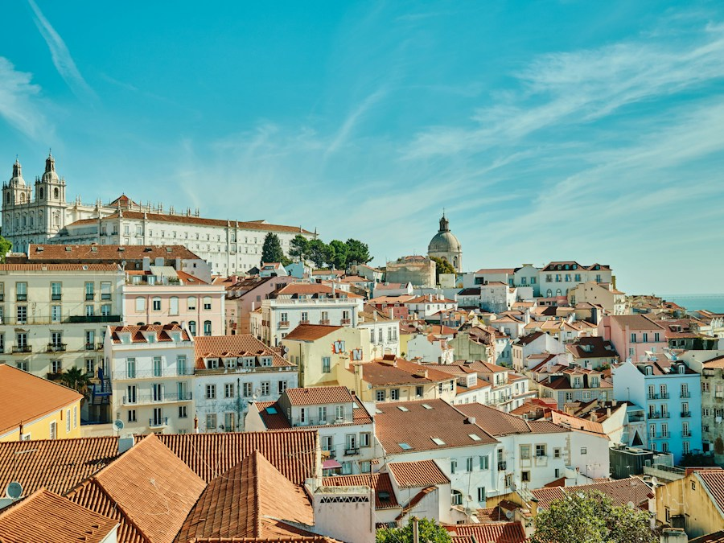

Photo: Unsplash ↗ · 旅先イメージ写真（本人撮影の写真はDiaryへ）
◇MY HONEST NOTES
トラみちゃんの旅の記録
◇A CITY TO DREAM ABOUT
この国の旅先アイデア
Lisbonリスボン都市を見る ↗
◇BEFORE YOU GO
旅の準備
◇MORE PLACES TO LOVE
次に気になる旅先
✧ TORAMI TRAVEL ✧
ポルトガル

Photo: Unsplash ↗ · 旅先イメージ写真（本人撮影の写真はDiaryへ）
トラみちゃんの旅の記録
この国の旅先アイデア
旅の準備
次に気になる旅先